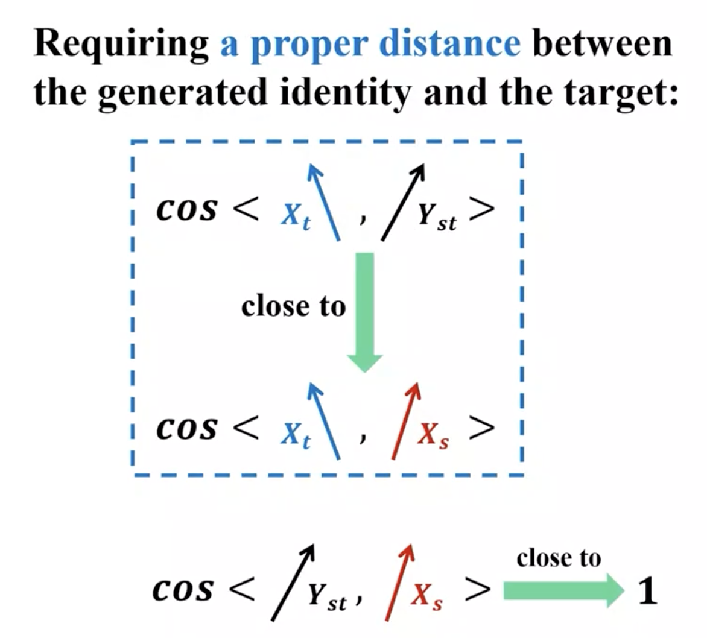
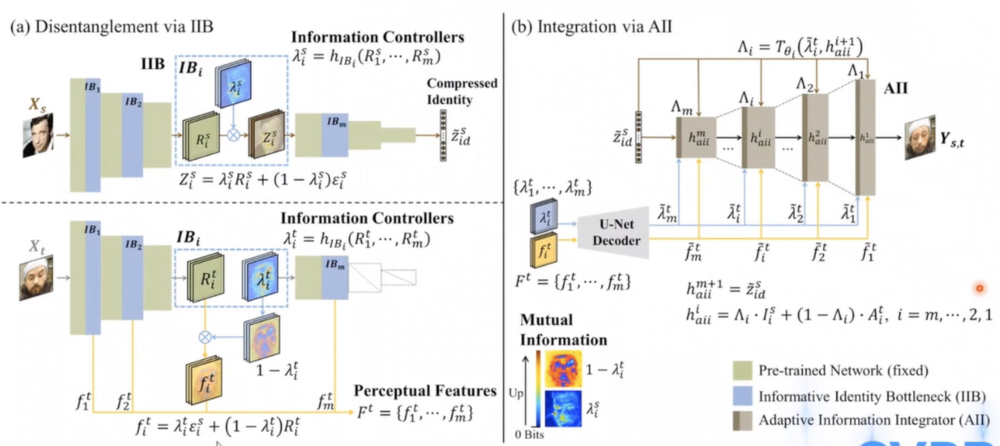
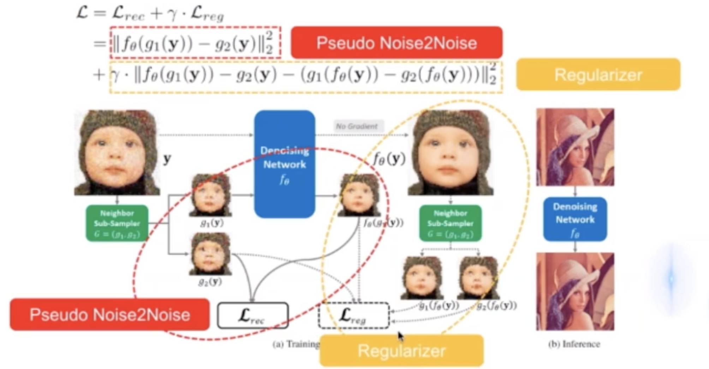
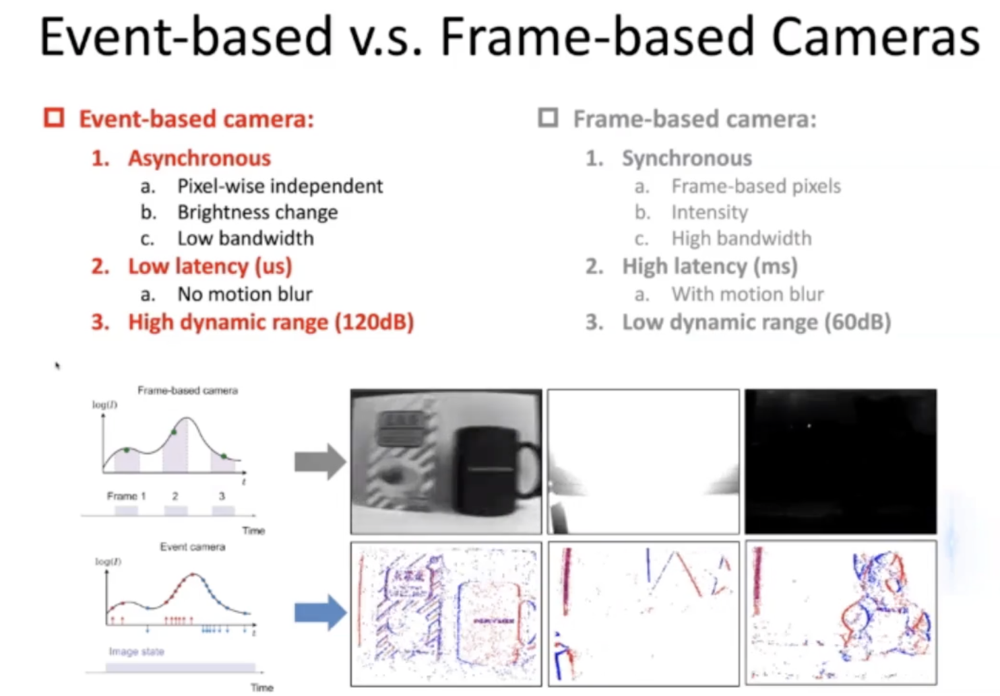

CVPR 2021 论文分享--微软亚洲研究院
图像生成领域
Information Bottleneck Disentanglement for Identity Swapping（换脸）
Introdution
Definition: Identity Swapping: a person in an existing image or video is replaced with someone else's likeness.
Main Dificultites & Previous Works
Exchanging Face in Images ( 2004 ) : Large differences in viewpoint & illumination
Face to Face (2016) : Preservation of target expression
On Face Segmentation Face Swapping, and Face Perception (2017): Robust face swapping
FaceSwap (2017) : Real-time subject-aware identity swapping
FSGAN (2019) : Subject agnostic
FaceShifter (2020): Occusion Aware
the focus of this work：Disentanglement（解耦）从 target face 解耦出 target perception
- Generated face = source identity + target perception(expression, pose, background, lighting...)
Identity mixed
Methods：Measurement
- Discrimination 量化标准
- generated identity 和 target identity 之间距离足够远，与source identity 距离足够进
- 
Disentangled representation learning

Perception的组成复杂，所以学习对最小身份信息的最小表征间接得到与身份信息相关度低的部分
- Information Bottleneck（IB） Principle
- model： InfoSwap：预训练网络，输出Compressed Itentity Information. R 为中间特征
信息瓶颈层：预测信息控制层 \(\lambda\)，控制 Identity Information 的输出，范围0-1. 从与当前瓶颈层的中间特征均值方差一致的高斯分布抽样噪声，得到 Z Identity vector
Loss

Leveraging Line-point Consistent to Preserve Structure for Wide Parallax Image Stitching 贾棋 （图像拼接）
- Motivation
- Points and lines are matched separately --> Inconsistently and non-uniformly stretched or compressed --> artifacts in the stitched images
- Limited matched point pairs --> limited constrants for warping
- Lacking global linear structure constraints
- Conflicts on maintaining local and global structures
- Existing metrics (RMSE /SSIM) can't reflect the alignment of points on linear structures or the collinearity of matched line segments
- Contributions
- Consistant line-point constraints (匹配共面区域)
- 射映不变量 characteristic number（cn) 寻找共面匹配区域
- 计算单应矩阵H
- Maintain and balance both local shape and global linear structures （Mesh Deformation）
- Energy Function：Line Preserving Term + Point-Line Alignment Term + Distortion Control Term
- Evaluation on linear structures
- Quality Matrix
- Consistant line-point constraints (匹配共面区域)
- Experiments
Facelnpainter: High Fidelity Face Adaptation to Heterogeneous Domains（异构域换脸）
- Motivation
- Identity modification
- Attribute preservation (pose, expression, lighting, occlusion, background) - 3D ， Contextual loss
- Boundary artifacts - AdaRes
- Low quality - DFT
- Face-swapping video synthesis
- Heterogeneous domains - FaceInpainter
- Approach
图像处理
Deep Homography for Efficient Stereo Image Compression（CVPR-2021 oral） 基于单应性变换的高效双目图像压缩算法
研究背景及思路
- 双目图像联合压缩：双目摄影设备拍摄图片具有高重复性、相似性
- 深度学习的双目图像压缩-DSIC
- 传统双目图像匹配——单应性变换 H （双目图片基本为刚性变换）
- 基于深度学习的双目图像匹配 —— 预测图像的 Homographic 矩阵
研究方法
设计思想：将左目图像作为主视图，进行正常的Encode 和 Decode， 右目图像以左目为先验知识，关注压缩和解压缩左目不存在的信息
网络结构设计： H计算及压缩+双目编码、主视眼优先解码+指导辅助眼解码+交叉质量增强
- Regression Model 计算 H 矩阵，将左目变换到右目图像再进行 congnition，右目图像质量优于左目
- Cross Quality Enhancement （QCE) ：
- 解压的左目、右目、Hmatrix 作为输入
- 联合指导：左目图像变换后指导右目图像，右目图像变换后指导左目。实现左右目图像均衡提升
- 熵编码模型 HESIC
- 混合高斯双目熵模型——适应于GPU并行加速 （y1左目，y2右目）
- 基于上下文双目高斯熵模型
- Loss
贡献
- 提出基于深度学习的单应性双目图像压缩算法，利用神经网络计算 H 矩阵提高压缩效率
- 熵模型预测编码解码的概率分布
- 提出CQE模块，提高解码性能
Learning Scalable \(\ell_\infty\)-constrained Near-lossless Image Compression via Joint Lossy Image and Residual Compression (图像压缩)
Introduction
Loss Image Compression
- Trade-off between bit-rates and distortion(high compression ratio)
- DIstortion measures :
- PSNR or MS-SSIM (average quality)
- Potential problem: small average distortion but large local distortion
- Weakness: 不可靠
- 在专业图像领域：医学影响、遥感影像、图像归档
Lossless Image Compression
- 可靠
- 理论限制：bit-rates >= entropy.
- 实际：bit-rates ~= cross entropy
- 低压缩率
Near-lossless Image Compression
image compression under a tight \(\ell_\infty\)error bound
If \(\tau = 0\), special case: lossless compression
Advantages: More reliable && Higher compression ratio
Challenges: \(\ell_\infty\) 不可导 & 有损压缩策略不能严格保证满足 \(\ell_\infty\) 失真约束
schemes：将有损+残差编码建模为联合优化的无监督学习问题
Algorithm
- 提出隐变量模型\(p_\theta\), y 为隐变量
底层视觉
Neighbor2 Neighbor Self-supervised Denoising from Single Noisy Images(图像去噪)
- Research Background
- Image Noise： Shot noise(Poisson) 、read noise(Gaussian) 、Dark current noise 、Row/Column noise
- Synthetic paired data based methods
- Real-world paired data based methods
- GroundTruth-free based methods
- ztraditional methods BM3D. NLM
- noisy-pairs based methods Noise 2noise
- Self-supervised methods
- Regularization-based methods Deep Image Prior
- Blind-spot Network based methods Noise2self. Noise2void Laine19
- Pseudo-noisy-pairs based methods Noisy-as-clean, Noiser2noise, Self2self
- Proposed Method
- Revisit Noise 2noise：两个含噪声图像训练模型和干净图像训练的模型参数一致
- Generalization to noisy pairs with Similar clean images
- Application to single Noisy Images：设计采样器人为构造一个相近的含噪声观测
- Neighbor2Neighbor Framework
- 
Event-based Synthetic Aperture Imaging with a Hybrid Network（合成孔径成像）
Frame-based SAL: Principle
limits
Event Camera：Biology has no notion of frames, and works continuously and asynchronously
- Each event contains: 1. time stamp; 2. pixel location; 3. polarity(ON, OFF
- 
- Framework
- Refocus：Align signal events, while scatter out noise events
- Hybrid NN：SNN（encoder）+CNN（decoder)
Deep Animation Video Interpolation in the Wild (动漫视频视频拆分)
机器学习及多模态
StableNet：Deep Stable Learning for Out-of-Distribution Generalization
Problems of today's DL - Stability
- 基本假设：独立同分布 --- 训练数据和测试数据有近似的distribution，否则 训练得到的 model performance 很难保证
possible reason：Correlation is Unstable（something wrong in the way we use correlation）
- the source of correlation
- Causation：Causal mechanism（Stable and explainable）
- Confounding：Ignoring X（Spurious Correlation）
- Sample Selection Bias：Conditional on Sample （Spurious Correlation）
- 由于 Spurious Correlation 导致今天的 model 不稳定性及不可解释性

- the source of correlation
Stable Learning：实际应用中的 Test distribution 并不是已知的（Transfer Learning（domain adaptation） 假设是已知的），stable learning 希望在不同的distribution下的average performance 没有很大的下降情况下，使 Variance（acc）降下来，性能保持稳定

Stable Learning with causal features
- Stable learning focuses on causal features of the obiect itself instead of the environment
- 相对于 Correlation structure，Causal structure 的跨分布，跨环境的不变性更有保障，causal 是更本质的刻画的机制
- 如图所示ResNet的 feature 是全局弥散的，StableNet 希望 energy 集中到 object 上

- T 的改变不影响X的分布，也即X与T独立时，T和Y的 Correlation = Causality

- 对全局样本重加权，使得所有变量之间独立，则 Correlation = Causality，可以将 Correlation model 转化成 Causality model
- deep learning 的非线性独立难以计算，引入傅里叶变换 （RFF)
- Measure and eliminate the complex non-linear dependencies among features with Random Fourier Features(RFF)，对特征进行傅里叶随机特征进行增广，当维度足够大时，对增广后的特征进行线性独立，可以保证原特征在低维度的非线性独立。（类似 SVM）
- The computation cost is acceptable
- deep learning 是 batch training，但重加权需要针对全局，设计 saving and reloading 策略
Learning sample weights globally
Sample weights learning module is an independent module which can be easily assembled with current deep models.
Sample weights and the classification model are trained iteratively

Limitaion of Current Domain Generalization
- Domain label need to be known
- High heterogeneity across domains.
- The capacities of different domains are balanced
Saliency map